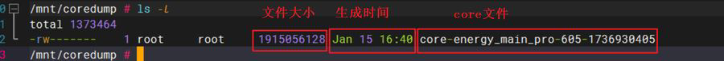
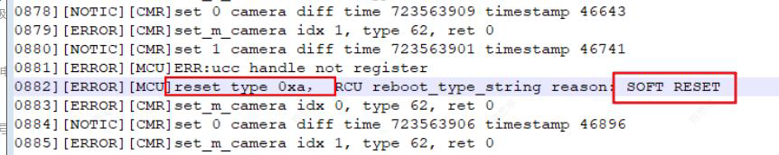
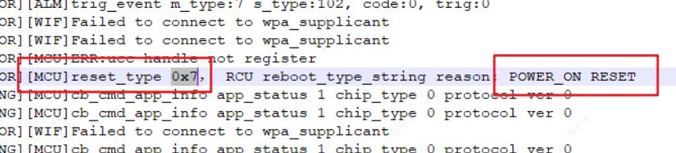

机器人异常重启排查与日志采集
异常重启要先排除人工断电、定时重启和参数修改后的主动重启，再按日志证据区分掉电与软重启。本篇给出从校时、下载 AGV 与全部内核日志、提取 Coredump 和电池告警，到核对 reset_type、SYSTEM BOOT、看门狗及 panic 的路径，避免被后续人工操作误导。
排障方法目录
本篇为基于厂商操作手册的原创整理，只提炼流程与判断方法，不复制原文；不同版本与控制器存在差异，结论请结合现场验证使用。
阶段一 · 先确认是否属于异常重启
异常重启是非计划中、不符合预期的机器人重启。开始分析前，先向现场核对操作与配置记录，排除以下预期内事件：
- 人为按电源键断电、上电；
- 软件设定的定时重启；
- 使用 MapStudioPro 修改参数后，按提示主动重启；
- 其他已确认的任务、平台或手动命令关机。
随后记录平台提示、人员描述和现场操作时间，形成初始时间窗。后续分析要能把事件归为主动重启、供电导致的掉电重启、应用崩溃或内核崩溃中的某一类，并给出对应日志证据。
软件崩溃后，现场可能为恢复运行再按键断电。此时重启后的日志可能显示掉电，但掉电只是后发生的恢复动作，不能据此漏掉之前的应用或内核异常。
阶段一 · 校时并下载异常前后 AGV 日志
先通过 PuTTY 以有线或无线方式 SSH 登录机器人，执行 date，记录系统时间与实际时间的偏差。后续所有“相近时间”判断都应考虑这个偏差。
date
AGV 日志命名规则为 AGV_创建时间_xxx。下载时异常前、异常后的日志都要保留，不能只取当前文件；如需平台侧佐证，同时保存对应时间窗的 RCS log_bak 和监控客户端录像。
| 软件版本 | 进入目录 | 采集要求 |
|---|---|---|
| V4.x 之前的老版本 | cd /mnt | 按创建时间选异常前后日志 |
| V4.x 新版本 | cd /mnt/agv_log | 保留重启前最后一份和重启后第一份 |
判断依据：正常 AGV 日志通常约 10 MB；中间出现不足 10 MB 的文件，提示这里可能发生重启，可用于缩小时间窗，但文件大小本身不是最终定因。
阶段一 · 全部内核日志与 Coredump 一并采集
内核日志用于确认 SYSTEM BOOT、系统调用、看门狗和 panic。不同硬件主控目录不同，但都必须执行 sz kmsgcat-log*，其中 * 表示所有匹配文件，内核日志必须全下。
| 主控硬件 | 内核日志目录 | 下载命令 |
|---|---|---|
| 二代硬件版本 | cd /tmp/kernel_log | sz kmsgcat-log* |
| 四代硬件版本 | cd /other_log/kernel_log | sz kmsgcat-log* |
再执行 ls -al /mnt/coredump。若存在 core 文件，核对文件生成时间是否与重启时间相近；相近则截图记录并下载文件，供应用崩溃分析。
ls -al /mnt/coredump

/mnt/coredump 中同时核对 core 文件名、大小与生成时间；时间接近异常窗口时，文件也要随日志一并保存。阶段一 · 按主控版本采集电池日志
掉电重启不能只看 AGV 的 reset_type，还需电池日志确认按键、温度和充放电告警。
主控 3.x：记录终端会话。
- 在 PuTTY 中进入“Session → Logging → Session logging”，选择 All session output，自定义 Log file name，通过 Browse 选择保存路径并 Save。
- 回到 Session，填写机器人地址，Port 设为 22，以 SSH 连接；地址以现场实际为准，不写入公开记录。
- 分别执行状态信息和历史告警命令，结束后拷贝完整会话日志。
castor_cli -T 0 -T 1 -W 1 -Z 1000 -R 103 -T0
castor_cli -T 0 -T 1 -W 2 -Z 1000 -R23
主控 V4.x：把电池告警写入 AGV 日志。SSH 登录后依次执行：
castor_engy_show_battery_info history_warn
castor_refresh_record刷新完成后下载最新 AGV 日志，在 ENG 相关内容中查历史告警。判断依据是告警时间是否能与重启窗口对应，而不是只确认命令有输出。
阶段二 · 确认重启窗口并排查主动重启
用平台记录、人员描述、AGV 文件创建时间和异常短文件共同确定重启前、重启后的两份日志。先在重启前 AGV 日志搜索 castor closed by x；有结果说明触发了主动断电机制，再按 x 值核对原因：
| x | 字段 | 重启 / 关机原因 |
|---|---|---|
| 0 | BATTERY_CLOSE_FROM_RCS | RCS 控制关机 |
| 1 | BATTERY_CLOSE_FROM_LOW | 低电量控制关机 |
| 2 | BATTERY_CLOSE_FROM_LOST | 失联控制关机 |
| 3 | BATTERY_CLOSE_FROM_UNIX | 手动命令控制关机 |
| 4 | BATTERY_CLOSE_FROM_TPM_TEMP_HIGH | 三元电池持续温度过高关机 |
| 5 | BATTERY_CLOSE_FROM_OVER_SPEED | 手动命令控制关机（原文字段说明） |
| 6 | BATTERY_CLOSE_FROM_TASK | 由任务控制关机 |
| 7 | BATTERY_CLOSE_FROM_CBS | 换电站控制关机 |
再在重启前日志搜索 SYSTEM WILL REBOOT。若有结果，并且内核日志也确认是 reboot 系统调用重启，可判定为主动软件重启，再继续核对参数修改、定时配置等触发来源。x 的具体机制和主动重启配置如需深入，应连同原文日志交由对应基线维护人员确认。
阶段二 · 用 reset_type 初分掉电与软重启
若重启前没有主动重启记录，解压并打开重启后的 AGV 日志，搜索 reset_type：
| reset_type | 初步判断 | 下一步 |
|---|---|---|
SOFT_RESET | 非掉电重启（软件重启） | 查看内核日志 |
POWER_ON_RESET | 掉电重启 | 查看电池日志；必要时联系售后继续定位 |

SOFT_RESET 指向非掉电软重启，下一步应对齐同一次 SYSTEM BOOT 查内核原因。
POWER_ON_RESET 指向掉电重启，但仍需用电池或内核证据确认是否为初始原因。继续搜索 last_close，查看最近几次电池日志内容及记录时间。若短路、按键断电等记录与重启时间相近，可作为原因参考。
看门狗倒计时或内核异常之后若又发生人工断电，重启后仍可能显示 POWER_ON_RESET。必须结合 last_close、内核启动点和现场操作交叉验证。
阶段三 · 掉电重启：电压、按键与 BMS 告警
R318 主控：打开 kmsgcat-log，搜索大写 SYSTEM BOOT，按 AGV 日志时间找到本次启动，再向上搜索 poweroff detected。存在该打印可证明当时出现电压过低。
主控 V2.9 及以上：检查电池日志在异常时间是否有按键触发记录，并向现场核实是否有人操作。无人按键却有按键掉电记录时，需考虑按键松弛或供电线路接触不良。其他 BMS 告警按下表核对：
| 告警字 | 日志记录 | 告警原因 |
|---|---|---|
| BMS 告警字 1 | warn: 0x40, 0, 0x80, 0x40 | 外部按键开关断开 |
| BMS 告警字 1 | warn: 0, 0, 0x80, 0x40 | 异常告警恢复 |
| BMS 告警字 1 | warn: 0x20, 0, 0x80, 0x40 | 温度过高 2 级 |
| BMS 告警字 2 | warn: 0, 0x20, 0x80, 0x40 | 温度过低 2 级 |
| BMS 告警字 2 | warn: 0, 0x80, 0x00, 0x00 | 放电电流过大 2 级（短路） |
| BMS 告警字 3 | warn: 0, 0, 0x20, 0x40 | 单体电压压差过大 2 级 |
| BMS 告警字 4 | warn: 0, 0, 0x80, 0x41 | 主机程序命令下电 |
| BMS 告警字 4 | warn: 0x40, 0, 0x80, 0x41 | 主机程序命令上电 |
供电原因可由电池日志或 R318 内核日志确认；后续由售后结合电池、硬件供电链路继续定位，必要时按现场流程临时更换电池做对比验证。
阶段三 · 软重启：区分系统调用与 shell 命令
打开 kmsg-log，搜索大写 SYSTEM BOOT。文件可能有多个启动点，必须按 AGV 日志的重启时间选择对应项，并查看该启动记录上方一行：
- 出现
reboot by syscall，继续查看 reboot 左侧的reason。 - 出现
reboot by shell，说明是在 shell 中执行 reboot 导致重启，应核对当时的人员操作。
| reason | 含义 | 处理判断 |
|---|---|---|
| 1 | 应用代码调用 reboot 接口 | 正常运行中发生属于异常；结合主动重启日志与具体应用逻辑分析 |
| 0 | 内核调用 restart 接口 | 继续查内核上下文 |
| 2 | CPU 温度超过设置阈值 | 默认阈值 75 ℃；及时反馈 BSP 与硬件侧 |
reason: 1 reboot by syscall，表示应用代码调用 reboot 接口；必须与本次启动时间对齐后再下结论。reason 2 对应的默认阈值为 75 ℃。温度过高可能带来其他不可预测异常，不要仅重启恢复后继续运行而不反馈。
阶段三 · 看门狗与应用崩溃重启
在同一个 SYSTEM BOOT 启动点向上查看数行，若出现 watchdog pre-timeout: xxx，说明看门狗触发了重启。
- 检查
/mnt/coredump是否存在与重启时间相近的 core 文件。 - 在内核日志继续搜索
coredump，确认崩溃前是否生成文件。 - 有 core 文件时，下载内核日志和 core 文件，转嵌入式应用侧分析具体线程；没有 core 文件时，保留看门狗上下文，转 BSP 侧继续排查。
watchdog pre-timeout 紧邻后续 SYSTEM BOOT，是看门狗重启证据；随后必须再查 core，而不是直接把原因归为硬件。判断依据：“看门狗触发”描述了重启机制，core 文件及前面的应用异常才用于继续定位是哪一线程或模块触发。
阶段三 · 内核 panic、Oops、OOM 与时间线交叉验证
在对应 SYSTEM BOOT 后向下查看数行：若有 panic_info_start，继续核对下一行 panic_time 是否与实际重启窗口对应；能对应上，才可认定内核 panic 导致本次重启。
panic_info_start 是 panic 标志，仍要用 panic_time 与本次重启窗口对齐。若启动点向上有 oops、OOM（out of memory）、panic 等异常打印，也要保留完整上下文：OOM 转嵌入式研发分析内存与被杀进程，Oops 和 panic 由技术支持协调 BSP 排查。
内核日志先后顺序为 kmsgcat.log、kmsgcat.log.1、kmsgcat.log.2……，按此顺序拼接事件。最终时间线至少应对齐：首个异常打印 → 看门狗或崩溃记录 → 电池按键 / 掉电记录 → SYSTEM BOOT → 重启后首条 AGV 日志。若人工断电发生在软件异常之后，应分别记录“初始故障”和“恢复动作”。
收尾与注意事项
- 采集前先执行
date并记录系统时间偏差；AGV 日志要覆盖异常前后，内核日志必须全部下载。 - 保留原始目录结构、文件名、大小和生成时间，不要只复制搜索命中的单行；core 文件和终端会话日志也应原样保存。
- 主动重启同时看重启前的
castor closed by x、SYSTEM WILL REBOOT与内核系统调用证据。 reset_type和last_close都用于初判，必须和内核启动点、电池告警及现场操作交叉验证。- 所有
SYSTEM BOOT都要先匹配时间，再查看其上方或下方对应行，避免把历史重启的记录套到本次事件。 - 供电问题转售后，应用崩溃附 core 转嵌入式应用侧，无 core 的看门狗及内核问题转 BSP；没有明确指向时，整理完整时间线后请技术支持协调分析。
- 公开或跨团队传递材料前，去除现场地址、设备标识、用户路径和人员信息，只保留通用命令、字段与判断过程。
上线前核对
- 已排除人工按键、定时重启和参数修改后主动重启等预期事件
- 已执行 date 记录时间偏差，并下载异常前后 AGV 日志与全部内核日志
- 已按软件版本进入 /mnt 或 /mnt/agv_log，按硬件版本进入对应 kernel_log 目录
- 已执行 ls -al /mnt/coredump，时间相近的 core 文件已截图并原样下载
- 已按主控 3.x 或 V4.x 对应流程采集电池日志，V4.x 已刷新后下载最新 ENG 内容
- 已搜索 castor closed by x 与 SYSTEM WILL REBOOT，并按 x 值和内核证据核对主动重启
- 已用 reset_type 初分 SOFT_RESET / POWER_ON_RESET，并结合 last_close 继续验证
- 掉电分支已检查 poweroff detected、按键记录及 BMS 告警，并向现场核实人工操作
- 软重启已核对 reboot by syscall / shell、reason、watchdog、coredump、panic_time 等同一启动点证据
- 已拼接异常、看门狗或崩溃、电池事件、SYSTEM BOOT 与首条 AGV 日志的完整时间线并留存原始证据